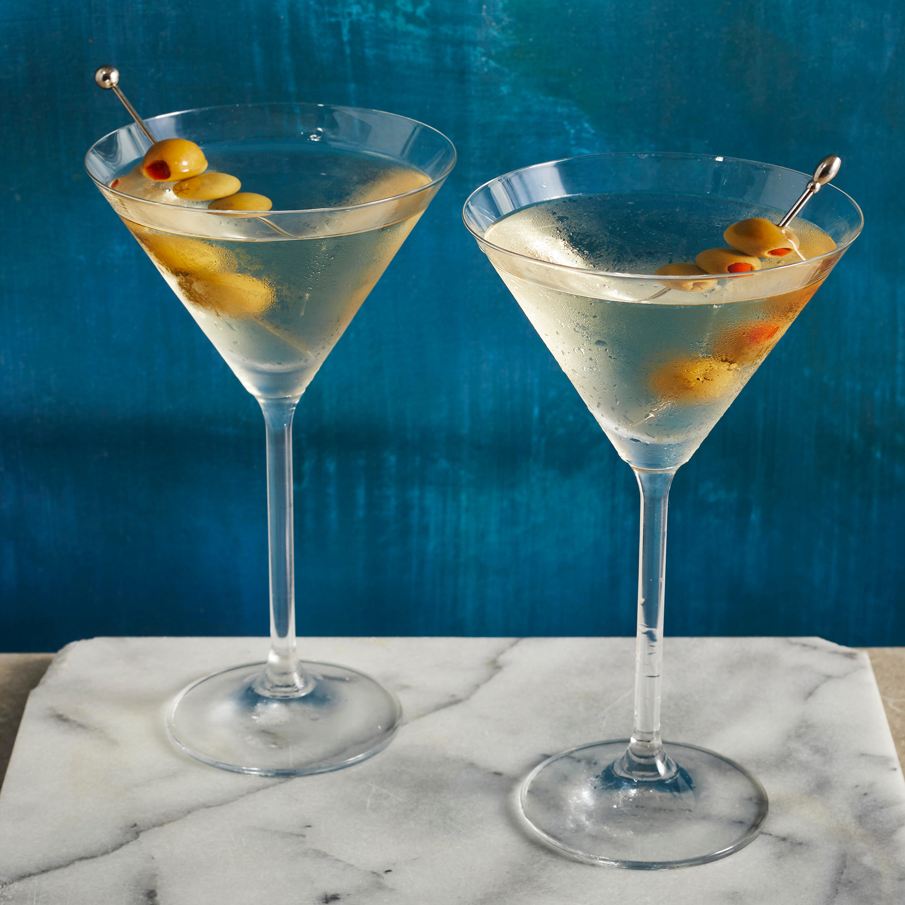

Martini Recipe

James Bond's Preferred Drink
The drink made popular by 007 agent, James Bond. This classic drink is made with vodka. While Bond prefers it shaken,
it doesn't have to just be that. It is usually made by stirring the Ingredients together.
Most martinis come with an olive or lemon twist. You can also add olive juice to make it a dirty martini.
Ingredients
- Vodka: 3 ounces
- Dry Vermouth: 1 ounce
- Ice: 1 cup
- Olives: 3 small ones
- (Optional)Olive Juice: 1/2 ounce
Steps
- Add vodka and dry vermouth to a cocktail shaker filled with ice. Shake (or stir) well.
- Strain into a martini glass.
- Garnish with a toothpick of olives.
- (Optional) Add olive juice to glass to make it dirty.
- Enjoy 007's favorite drink!